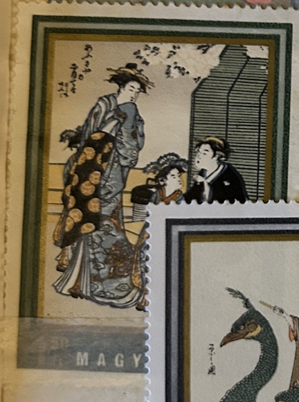
| SOURCE | TITLE| IMAGE MATCH | click to source page |
| www.buyhungarianstamps.com | 2077-2084 Hungary - Japanese Prints from Museum of East ... | 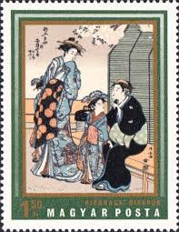 |
| www.metmuseum.org | Isoda Koryūsai - The Courtesan Sugatami of the Tsuruya ... | 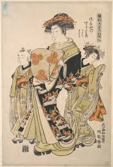 |
| www.dreamstime.com | 179 Courtesans Stock Photos - Free & Royalty-Free Stock ... | 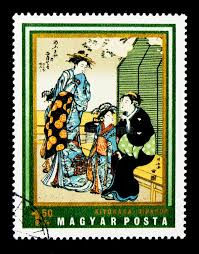 |
| www.chairish.com | Ladies Enjoying the Evening Cool at Nakasu, E-Ukiyo ... | 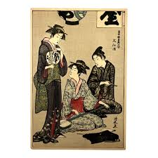 |
| www.metmuseum.org | Chōbunsai Eishi - Two Oiran with Two Female Attendants in ... | 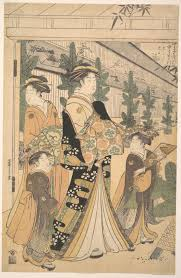 |
| www.ebid.net | HUNGARY, Courtesans by Kiyonaga Utamaro, green 1971, 1.50Ft ... | 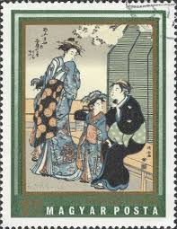 |
| www.haigsofrochester.com | 20th C. Reproduction of Courtesans Admiring a Telescope ... | 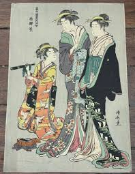 |
| www.mutualart.com | Torii Kiyonaga | Torii Kiyonaga Ôban | MutualArt | 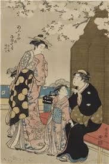 |
| www.amazon.com | Amazon.com: Historic Pictoric Print : Young Lady and Matron ... | 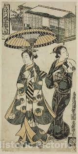 |
| www.redbubble.com | Japanese geishas traditional Japanese woodprint poster ... | 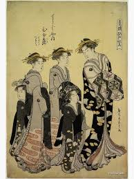 |
| www.bukowskis.com | Two KORYUSAI ISODA (1735-1790) color woodblock prints. Japan ... | 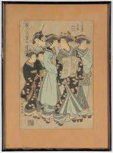 |
| uw.manifoldapp.org | An Oiran Accompanied by Two Kamuro | Art H 309 A ... | 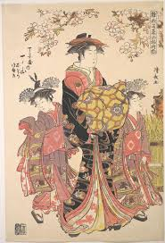 |
| www.sieboldhuis.org | Sieboldhuis | The Riddles of Ukiyo-e. Women and Men in Japanese… | 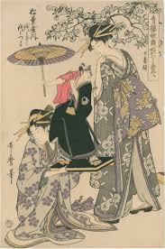 |
| honolulu.emuseum.com | Modern Reproduction of: Sugawara of the Tsuruya with ... | 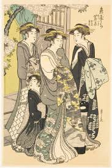 |
| www.orientaloutpost.com | Beauties Of The East - Japanese Woodblock Large Wall Scroll | 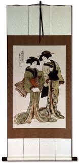 |
| www.fujiarts.com | Kiyonaga (1752 - 1815) Courtesans Viewing Cherry Blossoms ... | 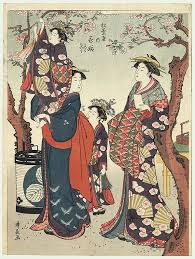 |
| www.ebay.com | Japanese Hyogensha Christmas Card Peacock Brand Vintage ... | 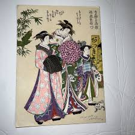 |
| www.mutualart.com | Isoda Koryusai | from HINAGATA WAKANA NO HATSUMOYO [FIRST ... | 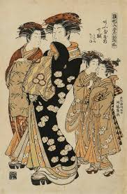 |
| www.invaluable.com | Sold at Auction: Torii Kiyonobu, Japanese Woodblock Prints ... | 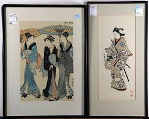 |
| www.potomackcompany.com | Lot - TORII KIYONAGA, JAPANESE 1752-1815, GEISHA OF THE ... | 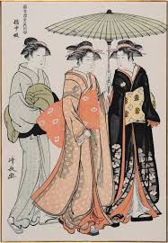 |
| www.anticstore.art | Pair of Japanese prints, Edo period, circa 1850 - Ref.104084 | 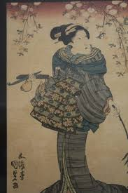 |
| www.alamy.com | Ono no Tōfū Watching a Frog by Torii Kiyohiro (Japanese ... | 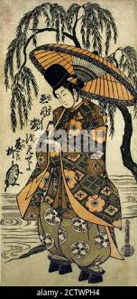 |
| www.yamada-shoten.com | Shucho “丁子や雛つる” | Yamada Shoten | Tokyo, Japan | 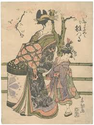 |
| www.sothebys.com | Isoda Koryusai (1735-1790) | The courtesan Shioginu of the ... | 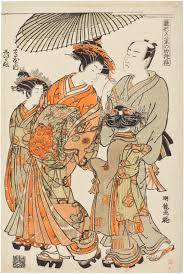 |
| www.linkauctiongalleries.com | Lot - Keisai Eisen, Japanese 1790-1848, woodblock print | 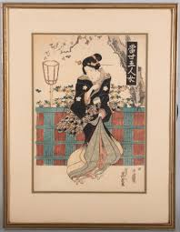 |
| www.artic.edu | The Actor Segawa Kikunojo III as Otora in the Play Ume ... | 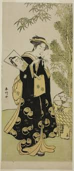 |
| www.viewingjapaneseprints.net | Viewing Japanese Prints: Isoda Koryûsai (礒田湖龍齋) | 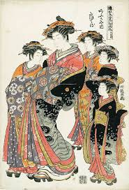 |
| www.japansociety.org.uk | The Japan Society - Japanese Prints, Ukiyo-e in Edo, 1700-1900 | 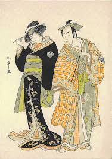 |
| www.walmart.com | Chōbunsai Eishi 11x14 Black Ornate Wood Framed Double Matted ... | 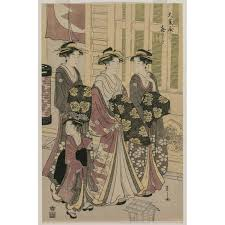 |
| ukiyo-e.org | Japanese Print "Four Beauties" by Torii Kiyonaga | 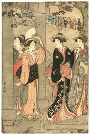 |
| www.ebay.com | Vintage Set Art Japanese prints 18-19 centuries | eBay | 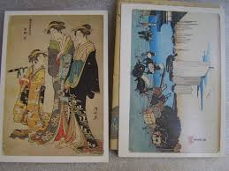 |
| www.instagram.com | Репродукції укійо-е, вінтажні друки (всі продано) Настрій ... | 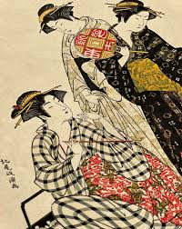 |
| www.fujiarts.com | Edo era artist (unsigned) Courtesan of the Shin Yoshiwara ... | 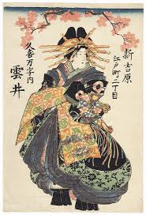 |
| publicdomainc.com | Kamuro - Public Domain C Free Image Museum | 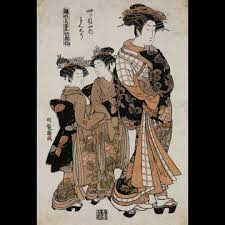 |
| www.invaluable.com | Eishi (1756) Paintings & Artwork for Sale | Eishi (1756) Art ... | 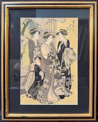 |
| www.pamono.eu | Four Women in Edo-Period Kimono, 1882, Print for sale at Pamono | 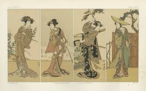 |
| artsandfood.com | A Celebration of Japanese Prints to honor their contribution ... | 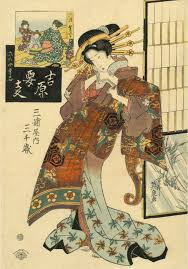 |
| www.mayfairgallery.com | Set of eight Japanese Meiji period woodblock prints ... | 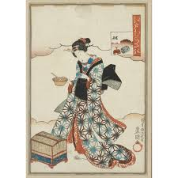 |
| printsofjapan.wordpress.com | Kiyonaga | Vegder's Blog | 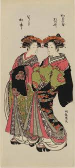 |
| shogunsgallery.com | Original Japanese Woodblock Print: By Eisen (1790-1848 ... | 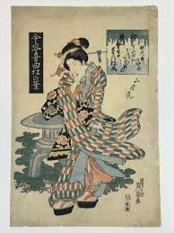 |
| auctionet.com | IKEDA EISEN. Hitomoto of the Daimonjiya. 1. half of the 19th ... | 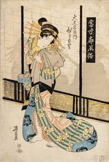 |
| theartofjapan.com | Ukiyo-E | The Art of Japan | 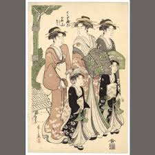 |
| www.creativeboom.com | Sheer Pleasure: Frank Brangwyn and the Art of Japan at the ... | 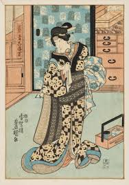 |
| www.artsy.net | COLLECTING AND CONNOISSEURSHIP: ORIGINAL COLLECTORS | Artsy | 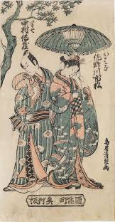 |
| www.lelandlittle.com | Japanese Woodblock Prints by Eizan Kikugawa (1787-1867) and ... | 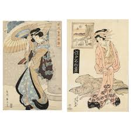 |
| www.facebook.com | Yokohama prints of foreigners in Japan, 1860s | 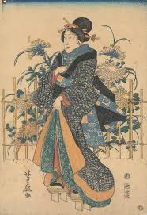 |
| www.rubylane.com | Vintage Japanese Woodblock Prints 4 Geisha Girl Figures ... | 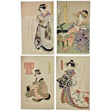 |
| www.artic.edu | The Actor Nakamura Riko I in an Unidentified Role | The Art ... | 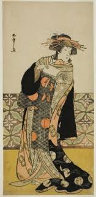 |
| www.instagram.com | A Ninja by Takashi Murakami Lurks in the Wholesaler District ... | 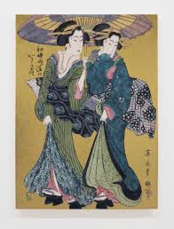 |
| chidorivintage.com | Japanese Ukiyoe Women Walking Geisha Torii Kiyonaga ... | |
| www.sothebys.com | Utagawa Kunisada (1786-1864) Kikugawa Eizan (1787-1867 ... | |
| www.artelino.com | Torii Kiyonaga - Ukiyo-e | |
| artzze.com | A 19th Century Japanese Meiji Era Wood Block Print Of A ... | |
| www.lookandlearn.com | Two Women on Matsuchi Hill Edo free public domain image ... | |
| en.wikisource.org | Japanese Wood Engravings/Japanese Wood Engravings ... | |
| www.metmuseum.org | Chōbunsai Eishi - A Man and a Girl Walking in the Rice ... | |
| shop.ellisantique.com | Antique Japanese Edo Art Woodblock Print Pair Ukiyo-e Women ... |  |
| mandrakepetworth.com | Superb 19th Century Japanese Silk Painting – Mandrake Petworth | |
| www.facebook.com | Edo era courtesan in a plum blossom and full moon patterned ... | |
| events.umich.edu | Expired) Japanese Prints of Kabuki Theater from the ... |